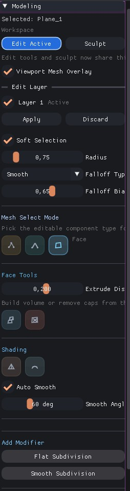
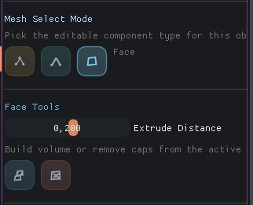
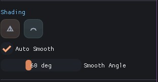

Edit Mesh

Please save the edit mesh overview screenshot as
docs/images/edit_mesh_header.jpgEdit Mesh is the non-destructive topology workspace inside the shared Modifiers & Sculpt panel. It keeps the right-side sculpt dock free for brush workflows and centers direct mesh operations in the main modifier panel.
1. Workspace Tabs

Please save the edit mesh workspace screenshot as
docs/images/edit_mesh_workspace.jpgThe modifier panel now exposes Edit and Sculpt as workspace tabs. Entering Edit automatically prepares an edit layer, enables viewport overlays, and defaults to vertex selection.
| Area | Purpose |
|---|---|
| Edit Button | Activates editable mesh overlays and direct topology tools. |
| Sculpt Button | Switches to the brush-based sculpt workflow without leaving the panel. |
| Viewport Mesh Overlay | Shows editable components and supports direct on-mesh picking. |
| Edit Layer | Lets you apply or discard non-destructive mesh changes. |
2. Selection and Topology Tools
Vertex Mode
- Add face from 3 or 4 selected points
- Merge selected vertices to center
- Weld by distance with threshold control
- Dissolve vertex while keeping surface continuity
Edge Mode
- Loop and ring selection helpers
- Loop cut with adjustable insert position
- Dissolve edge without tearing polygon flow
Face Mode
- Extrude faces along normals
- Delete face islands to open holes
- Use the same selection cache as the edit overlay
3. Soft Selection and Shading
Edit Mesh combines direct component editing with soft-selection falloff and shading controls, so you can reshape forms without jumping to a separate panel.
| Block | What It Controls |
|---|---|
| Soft Selection | Radius, falloff type, and falloff bias for proportional edits. |
| Shading | Shade Flat, Shade Smooth, and Auto Smooth angle threshold. |
| Edit Layer Actions | Apply bakes current changes into the mesh, Discard drops the temporary layer. |

Please save the selection tools screenshot as
docs/images/edit_mesh_select_tools.jpg
Please save the shading and soft selection screenshot as
docs/images/edit_mesh_shading.jpg